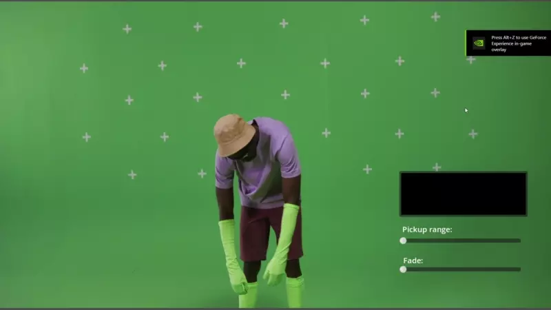
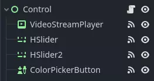
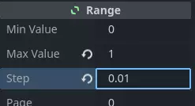

Playing videos
Godot supports video playback with the VideoStreamPlayer node.
Supported playback formats
The only supported format in core is Ogg Theora (not to be confused with Ogg Vorbis audio) with optional Ogg Vorbis audio tracks. It's possible for extensions to bring support for additional formats.
H.264 and H.265 cannot be supported in core Godot, as they are both encumbered by software patents. AV1 is royalty-free, but it remains slow to decode on the CPU and hardware decoding support isn't readily available on all GPUs in use yet.
WebM was supported in core in Godot 3.x, but support for it was removed in 4.0 as it was too buggy and difficult to maintain.
Note
You may find videos with a .ogg or .ogx extensions, which are generic
extensions for data within an Ogg container.
Renaming these file extensions to .ogv may allow the videos to be
imported in Godot. However, not all files with .ogg or .ogx
extensions are videos - some of them may only contain audio.
Setting up VideoStreamPlayer
Create a VideoStreamPlayer node using the Create New Node dialog.
Select the VideoStreamPlayer node in the scene tree dock, go to the inspector and load a
.ogvfile in the Stream property.If you don't have your video in Ogg Theora format yet, jump to Recommended Theora encoding settings.
If you want the video to play as soon as the scene is loaded, check Autoplay in the inspector. If not, leave Autoplay disabled and call
play()on the VideoStreamPlayer node in a script to start playback when desired.
Handling resizing and different aspect ratios
By default, the VideoStreamPlayer will automatically be resized to match the video's resolution. You can make it follow usual Control sizing by enabling Expand on the VideoStreamPlayer node.
To adjust how the VideoStreamPlayer node resizes depending on window size, adjust the anchors using the Layout menu at the top of the 2D editor viewport. However, this setup may not be powerful enough to handle all use cases, such as playing fullscreen videos without distorting the video (but with empty space on the edges instead). For more control, you can use an AspectRatioContainer node, which is designed to handle this kind of use case:
Add an AspectRatioContainer node. Make sure it is not a child of any other container node. Select the AspectRatioContainer node, then set its Layout at the top of the 2D editor to Full Rect. Set Ratio in the AspectRatioContainer node to match your video's aspect ratio. You can use math formulas in the inspector to help yourself. Remember to make one of the operands a float. Otherwise, the division's result will always be an integer.

This will evaluate to (approximately) 1.777778
Once you've configured the AspectRatioContainer, reparent your VideoStreamPlayer node to be a child of the AspectRatioContainer node. Make sure Expand is enabled on the VideoStreamPlayer. Your video should now scale automatically to fit the whole screen while avoiding distortion.
See also
See Multiple resolutions for more tips on supporting multiple aspect ratios in your project.
Displaying a video on a 3D surface
Using a VideoStreamPlayer node as a child of a SubViewport node, it's possible to display any 2D node on a 3D surface. For example, this can be used to display animated billboards when frame-by-frame animation would require too much memory.
This can be done with the following steps:
Create a SubViewport node. Set its size to match your video's size in pixels.
Create a VideoStreamPlayer node as a child of the SubViewport node and specify a video path in it. Make sure Expand is disabled, and enable Autoplay if needed.
Create a MeshInstance3D node with a PlaneMesh or QuadMesh resource in its Mesh property. Resize the mesh to match the video's aspect ratio (otherwise, it will appear distorted).
Create a new StandardMaterial3D resource in the Material Override property in the GeometryInstance3D section.
Enable Local To Scene in the StandardMaterial3D's Resource section (at the bottom). This is required before you can use a ViewportTexture in its Albedo Texture property.
In the StandardMaterial3D, set the Albedo > Texture property to New ViewportTexture. Edit the new resource by clicking it, then specify the path to the SubViewport node in the Viewport Path property.
Enable Albedo Texture Force sRGB in the StandardMaterial3D to prevent colors from being washed out.
If the billboard is supposed to emit its own light, set Shading Mode to Unshaded to improve rendering performance.
See Using Viewports and the GUI in 3D demo for more information on setting this up.
Looping a video
For looping a video, the Loop property can be enabled. This will seamlessly restart the video when it reaches its end.
Note that setting the project setting Video Delay Compensation to a non-zero value might cause your loop to not be seamless, because the synchronization of audio and video takes place at the start of each loop causing occasional missed frames. Set Video Delay Compensation in your project settings to 0 to avoid frame drop issues.
Video decoding conditions and recommended resolutions
Video decoding is performed on the CPU, as GPUs don't have hardware acceleration for decoding Theora videos. Modern desktop CPUs can decode Ogg Theora videos at 1440p @ 60 FPS or more, but low-end mobile CPUs will likely struggle with high-resolution videos.
To ensure your videos decode smoothly on varied hardware:
When developing games for desktop platforms, it's recommended to encode in 1080p at most (preferably at 30 FPS). Most people are still using 1080p or lower resolution displays, so encoding higher-resolution videos may not be worth the increased file size and CPU requirements.
When developing games for mobile or web platforms, it's recommended to encode in 720p at most (preferably at 30 FPS or even lower). The visual difference between 720p and 1080p videos on a mobile device is usually not that noticeable.
Playback limitations
There are some limitations with the current implementation of video playback in Godot:
Streaming a video from a URL is not supported.
Only mono and stereo audio output is supported. Videos with 4, 5.1 and 7.1 audio channels are supported but down-mixed to stereo.
Recommended Theora encoding settings
A word of advice is to avoid relying on built-in Ogg Theora exporters (most of the time). There are 2 reasons you may want to favor using an external program to encode your video:
Some programs such as Blender can render to Ogg Theora. However, the default quality presets are usually very low by today's standards. You may be able to increase the quality options in the software you're using, but you may find the output quality to remain less than ideal (given the increased file size). This usually means that the software only supports encoding to constant bit rate (CBR), instead of variable bit rate (VBR). VBR encoding should be preferred in most scenarios as it provides a better quality to file size ratio.
Some other programs can't render to Ogg Theora at all.
In this case, you can render the video to an intermediate high-quality format (such as a high-bitrate H.264 video) then re-encode it to Ogg Theora. Ideally, you should use a lossless or uncompressed format as an intermediate format to maximize the quality of the output Ogg Theora video, but this can require a lot of disk space.
FFmpeg (CLI) is a popular open source tool for this purpose. FFmpeg has a steep learning curve, but it's a powerful tool.
Here are example FFmpeg commands to convert an MP4 video to Ogg Theora. Since FFmpeg supports a lot of input formats, you should be able to use the commands below with almost any input video format (AVI, MOV, WebM, …).
Note
Make sure your copy of FFmpeg is compiled with libtheora and libvorbis support.
You can check this by running ffmpeg without any arguments, then looking
at the configuration: line in the command output.
Warning
Current official FFmpeg releases have some bugs in their Ogg/Theora multiplexer. It's highly recommended to use one of the latest static daily builds, or build from their master branch to get the latest fixes.
On Windows, make sure to use 32-bit builds of FFmpeg. Windows 64-bit builds have known issues with Theora encoding, which result in artifacts in the output file.
Balancing quality and file size
The video quality level (-q:v) must be between 1 and 10. Quality
6 is a good compromise between quality and file size. If encoding at a high
resolution (such as 1440p or 4K), you will probably want to decrease -q:v to
5 to keep file sizes reasonable. Since pixel density is higher on a 1440p or
4K video, lower quality presets at higher resolutions will look as good or
better compared to low-resolution videos.
The audio quality level (-q:a) must be between -1 and 10. Quality
6 provides a good compromise between quality and file size. In contrast to
video quality, increasing audio quality doesn't increase the output file size
nearly as much. Therefore, if you want the cleanest audio possible, you can
increase this to 9 to get perceptually lossless audio. This is especially
valuable if your input file already uses lossy audio compression. Higher quality
audio does increase the CPU usage of the decoder, so it might lead to audio
dropouts in case of high system load. See
this page
for a table listing Ogg Vorbis audio quality presets and their respective
variable bitrates.
The GOP (Group of Pictures) size (-g:v) is the max interval between
keyframes. Increasing this value can improve compression with almost no impact
on quality. The default size (12) is too low for most types of content,
it's therefore recommended using higher GOP values before reducing video
quality. Compression benefits will fade away as the GOP size increases though.
Values between 64 and 512 usually give the best compression.
Note
Higher GOP sizes will increase max seek times with a sudden increase when
going beyond powers of two starting at 64. Max seek times with GOP size
65 can be almost twice as long as with GOP size 64, depending on
decoding speed.
FFmpeg: Convert while preserving original video resolution
The following command converts the video while keeping its original resolution. The video and audio's bitrate will be variable to maximize quality while saving space in parts of the video/audio that don't require a high bitrate (such as static scenes).
ffmpeg -i input.mp4 -q:v 6 -q:a 6 -g:v 64 output.ogv
FFmpeg: Resize the video then convert it
The following command resizes a video to be 720 pixels tall (720p), while preserving its existing aspect ratio. This helps decrease the file size significantly if the source is recorded at a higher resolution than 720p:
ffmpeg -i input.mp4 -vf "scale=-1:720" -q:v 6 -q:a 6 -g:v 64 output.ogv
Chroma Key Videos
Chroma key, commonly known as the "green screen" or "blue screen" effect, allows you to remove a specific color from an image or video and replace it with another background. This effect is widely used in video production to composite different elements together seamlessly.

We will achieve the chroma key effect by writing a custom shader in GDScript and using a VideoStreamPlayer node to display the video content.
Scene Setup
Ensure that the scene contains a VideoStreamPlayer node to play the video and a Control node to hold the UI elements for controlling the chroma key effect.

Writing the Custom Shader
To implement the chroma key effect, follow these steps:
Select the VideoStreamPlayer node in the scene and go to its properties. Under CanvasItem > Material, create a new shader named "ChromaKeyShader.gdshader."
In the "ChromaKeyShader.gdshader" file, write the custom shader code as shown below:
shader_type canvas_item;
// Uniform variables for chroma key effect
uniform vec3 chroma_key_color : source_color = vec3(0.0, 1.0, 0.0);
uniform float pickup_range : hint_range(0.0, 1.0) = 0.1;
uniform float fade_amount : hint_range(0.0, 1.0) = 0.1;
void fragment() {
// Get the color from the texture at the given UV coordinates
vec4 color = texture(TEXTURE, UV);
// Calculate the distance between the current color and the chroma key color
float distance = length(color.rgb - chroma_key_color);
// If the distance is within the pickup range, discard the pixel
// the lesser the distance more likely the colors are
if (distance <= pickup_range) {
discard;
}
// Calculate the fade factor based on the pickup range and fade amount
float fade_factor = smoothstep(pickup_range, pickup_range + fade_amount, distance);
// Set the output color with the original RGB values and the calculated fade factor
COLOR = vec4(color.rgb, fade_factor);
}
The shader uses the distance calculation to identify pixels close to the chroma key color and discards them, effectively removing the selected color. Pixels that are slightly further away from the chroma key color are faded based on the fade_factor, blending them smoothly with the surrounding colors. This process creates the desired chroma key effect, making it appear as if the background has been replaced with another image or video.
The code above represents a simple demonstration of the Chroma Key shader, and users can customize it according to their specific requirements.
UI Controls
To allow users to manipulate the chroma key effect in real-time, we created sliders in the Control node. The Control node's script contains the following functions:
extends Control
func _on_color_picker_button_color_changed(color):
# Update the "chroma_key_color" shader parameter of the VideoStreamPlayer's material.
$VideoStreamPlayer.material.set("shader_parameter/chroma_key_color", color)
func _on_h_slider_value_changed(value):
# Update the "pickup_range" shader parameter of the VideoStreamPlayer's material.
$VideoStreamPlayer.material.set("shader_parameter/pickup_range", value)
func _on_h_slider_2_value_changed(value):
# Update the "fade_amount" shader parameter of the VideoStreamPlayer's material.
$VideoStreamPlayer.material.set("shader_parameter/fade_amount", value)
func _on_video_stream_player_finished():
# Restart the video playback when it's finished.
$VideoStreamPlayer.play()
using Godot;
public partial class MyControl : Control
{
private VideoStreamPlayer _videoStreamPlayer;
public override void _Ready()
{
_videoStreamPlayer = GetNode<VideoStreamPlayer>("VideoStreamPlayer");
}
private void OnColorPickerButtonColorChanged(Color color)
{
// Update the "chroma_key_color" shader parameter of the VideoStreamPlayer's material.
_videoStreamPlayer.Material.Set("shader_parameter/chroma_key_color", color);
}
private void OnHSliderValueChanged(double value)
{
// Update the "pickup_range" shader parameter of the VideoStreamPlayer's material.
_videoStreamPlayer.Material.Set("shader_parameter/pickup_range", value);
}
private void OnHSlider2ValueChanged(double value)
{
// Update the "fade_amount" shader parameter of the VideoStreamPlayer's material.
_videoStreamPlayer.Material.Set("shader_parameter/fade_amount", value);
}
private void OnVideoStreamPlayerFinished()
{
// Restart the video playback when it's finished.
_videoStreamPlayer.Play();
}
}
also make sure that the range of the sliders are appropriate, our settings are :

Signal Handling
Connect the appropriate signal from the UI elements to the Control node's script. you created in the Control node's script to control the chroma key effect. These signal handlers will update the shader's uniform variables in response to user input.
Save and run the scene to see the chroma key effect in action! With the provided UI controls, you can now adjust the chroma key color, pickup range, and fade amount in real-time, achieving the desired chroma key functionality for your video content.